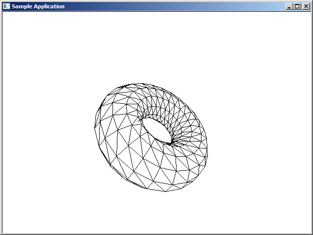

Загрузить проект (софтверный рендеринг) ЗДЕСЬ.

void Init_Torus()
{
int rings = 24;
int sides = 12;
nTriangleCount = 2 * sides * rings;
//одно дополнительное кольцо для дублирования первого кольца
nVertCount = sides * (rings+1);
vert_buff = new vertex[nVertCount];
float outerRadius = 8; //внешний радиус (общий)
float innerRadius = 4; //радиус трубки
float PI2 = 3.1415926f * 2.0f;
float ringFactor = PI2 / rings;
float sideFactor = PI2 / sides;
int idx = 0;
for( int ring = 0; ring <= rings; ring++ )
{
float u = ring * ringFactor;
float cu = cosf(u);
float su = sinf(u);
for( int side = 0; side < sides; side++ )
{
float v = side * sideFactor;
float cv = cosf(v);
float sv = sinf(v);
float r = (outerRadius + innerRadius * cv);
vert_buff[idx].x = r * cu;
vert_buff[idx].y = r * su;
vert_buff[idx].z = innerRadius * sv;
/*
norm_buff[idx].x = cv * cu * r;
norm_buff[idx].y = cv * su * r;
norm_buff[idx].z = sv * r;
tex[idx].tu = u / PI2;
tex[idx].tv = v / PI2;
// Normalize
float len = sqrtf( norms[idx].x * norms[idx].x +
norms[idx].y * norms[idx].y +
norms[idx].z * norms[idx].z );
norms[idx].x /= len;
norms[idx].y /= len;
norms[idx].z /= len;
*/
idx++;
}
}
index_buff = new unsigned int[nTriangleCount * 3];
idx = 0;
for( int ring = 0; ring < rings; ring++ )
{
int ringStart = ring * sides;
int nextRingStart = (ring + 1) * sides;
for( int side = 0; side < sides; side++ )
{
int nextSide = (side+1) % sides;
// квадрат - два треугольника
index_buff[idx] = (ringStart + side);
index_buff[idx+1] = (nextRingStart + side);
index_buff[idx+2] = (nextRingStart + nextSide);
index_buff[idx+3] = ringStart + side;
index_buff[idx+4] = nextRingStart + nextSide;
index_buff[idx+5] = (ringStart + nextSide);
idx += 6;
}
}
}